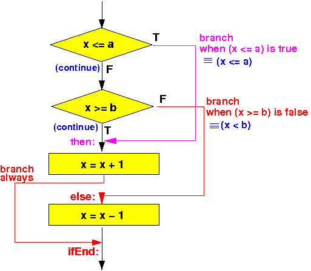

- Consider this if-statement
with an or logical operator:
if ( cond or "Other conditions" ) statement1; else statement2;The compound condition is:
cond or "Other conditions"When we evaluation the condition cond at the left hand side, there are 2 possible outcomes:
- cond ≡ true:
- In this case, we know the
outcome of
cond or
"Other conditions"
≡ true !!!
(Because true or any-boolean-value ≡ true)
- In this case, we know the
outcome of
cond or
"Other conditions"
≡ true !!!
- cond ≡ false:
- In this case, we must evaluate the "Other conditions" to determine the outcome of cond or "Other conditions"
So in the case that cond ≡ true, we can take the then branch of the program flow immediately (and terminate the boolean evaluation prematurely !!!)
- cond ≡ true:
- We can use this
short-circuit boolean evalation to
draw up the following
program flow control where we
make the branch decision
immediately
after evaluating a
part of the
boolean expression:
if ( cond or "Other conditions" ) ----> | statement1; V else +--------------+ TRUE statement2; | eval cond |--------+ +--------------+ | | | | FALSE | V | +--------------+ FALSE | | eval theRest |--------|---+ +--------------+ | | | TRUE | | | | | V | | statement1 <---------+ | | | +---------+ | | | | +--------------------+ | | | V | statement2 | | | | +-------->+ | | V
- The assembler construct
that realizes the
program control flow
of the
if-statement
with an
compound condition
"cond or OtherConditions" is as follows:
Evaluate "cond" (with cmp) TRUE Branch on TRUE outcome of "cond" to label A: ---------------+ | | | FALSE | V | Evaluate "Other Conditions" (another cmp) | | FALSE Branch on FALSE outcome of "Other Conditions" to label B: --|-----+ | | | | TRUE | | V | | A: "statement1" assembler code <--------------------------+ | | | Branch always to label C: ---------------+ | | | | | B: "statement2" assembler code <---------|----------------------+ | | V | C: +<-------------------------------+ | V
- High level programming langange:
int x, y, a; if (x <= a || x >= b) x = x + 1; else x = x - 1;The flow chart of the above program is:
 The assembler program code for this compound if-statement is:
/* -------------------------------------------------- <----a b-----> ------+----------+-------- if (x <= a or x >= b) x = x + 1; else x = x - 1; -------------------------------------------------- */ .text main: // Test if ( x <= a ) movw r0, #:lower16:x movt r0, #:upper16:x // r0 = addr(x) ldr r0, [r0] // r0 = x movw r1, #:lower16:a movt r1, #:upper16:a // r1 = addr(a) ldr r1, [r1] // r1 = a cmp r0, r1 // x <= a ? ble then // Branch to "then" if x <= a // test if ( x >= b ) movw r0, #:lower16:x movt r0, #:upper16:x // r0 = addr(x) ldr r0, [r0] // r0 = x movw r1, #:lower16:b movt r1, #:upper16:b // r1 = addr(b) ldr r1, [r1] // r1 = b cmp r0, r1 // x >= b ? blt else // Branch to "else" if x < b then: // x = x + 1 movw r0, #:lower16:x movt r0, #:upper16:x // r0 = addr(x) ldr r1, [r0] // r1 = x add r1, r1, #1 // r1 = x+1 str r1, [r0] // x = x+1 b ifEnd // ** SKIP over the else part !!! *** else: // x = x - 1 movw r0, #:lower16:x movt r0, #:upper16:x // r0 = addr(x) ldr r1, [r0] // r1 = x sub r1, r1, #1 // r1 = x-1 str r1, [r0] // x = x-1 ifEnd: .data x: .4byte 5 // Try x: 10 < x < 20 a: .4byte 10 b: .4byte 20 .end
- Example Program:
(Demo above code)

- Prog file: /home/cs255001/demo/asm/6-if/if-or.s
How to run the program:
- To compile: as255 if-or
- To run: use EGTAPI